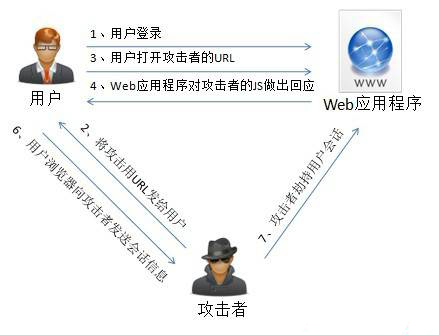
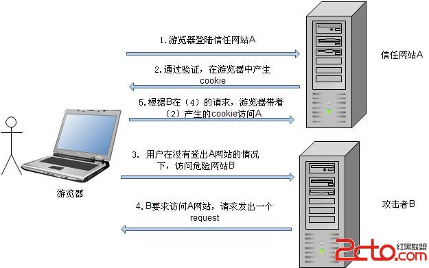
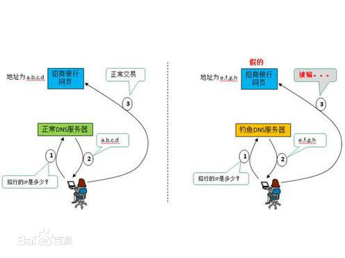

Web 安全的对于 Web 从业人员来说是一个非常重要的课题，所以在这里总结一下 Web 相关的安全攻防知识，希望以后不要再踩雷，也希望对看到这篇文章的同学有所帮助。今天这边文章主要的内容就是分析几种常见的攻击的类型以及防御的方法。
也许你对所有的安全问题都有一定的认识，但最主要的还是在编码设计的过程中时刻绷紧安全那根弦，需要反复推敲每个实现细节，安全无小事。
本文代码 Demo 都是基于 Node.js 讲解，其他服务端语言同样可以参考。
XSS
首先说下最常见的 XSS 漏洞，XSS (Cross Site Script)，跨站脚本攻击，因为缩写和 CSS (Cascading Style Sheets) 重叠，所以只能叫 XSS。
XSS 的原理是恶意攻击者往 Web 页面里插入恶意可执行网页脚本代码，当用户浏览该页之时，嵌入其中 Web 里面的脚本代码会被执行，从而可以达到攻击者盗取用户信息或其他侵犯用户安全隐私的目的。XSS 的攻击方式千变万化，但还是可以大致细分为几种类型。
非持久型 XSS
非持久型 XSS 漏洞，也叫反射型 XSS 漏洞，一般是通过给别人发送带有恶意脚本代码参数的 URL，当 URL 地址被打开时，特有的恶意代码参数被 HTML 解析、执行。
举一个例子，比如你的 Web 页面中包含有以下代码：
1 | Select your language: |
攻击者可以直接通过 URL (类似：https://xx.com/xx?default=<script>alert(document.cookie)</script>) 注入可执行的脚本代码。
非持久型 XSS 漏洞攻击有以下几点特征：
- 即时性，不经过服务器存储，直接通过 HTTP 的 GET 和 POST 请求就能完成一次攻击，拿到用户隐私数据。
- 攻击者需要诱骗点击
- 反馈率低，所以较难发现和响应修复
- 盗取用户敏感保密信息
为了防止出现非持久型 XSS 漏洞，需要确保这么几件事情：
- Web 页面渲染的所有内容或者渲染的数据都必须来自于服务端。
- 尽量不要从 URL，
document.referrer，document.forms等这种 DOM API 中获取数据直接渲染。 - 尽量不要使用
eval,new Function()，document.write()，document.writeln()，window.setInterval()，window.setTimeout()，innerHTML，document.creteElement()等可执行字符串的方法。 - 如果做不到以上几点，也必须对涉及 DOM 渲染的方法传入的字符串参数做 escape 转义。
- 前端渲染的时候对任何的字段都需要做 escape 转义编码。
escape 转义的目的是将一些构成 HTML 标签的元素转义，比如
<，>，空格等，转义成<，>， 等显示转义字符。有很多开源的工具可以协助我们做 escape 转义。
持久型 XSS
持久型 XSS 漏洞，也被称为存储型 XSS 漏洞，一般存在于 Form 表单提交等交互功能，如发帖留言，提交文本信息等，黑客利用的 XSS 漏洞，将内容经正常功能提交进入数据库持久保存，当前端页面获得后端从数据库中读出的注入代码时，恰好将其渲染执行。
主要注入页面方式和非持久型 XSS 漏洞类似，只不过持久型的不是来源于 URL，refferer，forms 等，而是来源于后端从数据库中读出来的数据。持久型 XSS 攻击不需要诱骗点击，黑客只需要在提交表单的地方完成注入即可，但是这种 XSS 攻击的成本相对还是很高。攻击成功需要同时满足以下几个条件：
- POST 请求提交表单后端没做转义直接入库。
- 后端从数据库中取出数据没做转义直接输出给前端。
- 前端拿到后端数据没做转义直接渲染成 DOM。
持久型 XSS 有以下几个特点：
- 持久性，植入在数据库中
- 危害面广，甚至可以让用户机器变成 DDoS 攻击的肉鸡。
- 盗取用户敏感私密信息
为了防止持久型 XSS 漏洞，需要前后端共同努力：
- 后端在入库前应该选择不相信任何前端数据，将所有的字段统一进行转义处理。
- 后端在输出给前端数据统一进行转义处理。
- 前端在渲染页面 DOM 的时候应该选择不相信任何后端数据，任何字段都需要做转义处理。
基于字符集的 XSS
其实现在很多的浏览器以及各种开源的库都专门针对了 XSS 进行转义处理，尽量默认抵御绝大多数 XSS 攻击，但是还是有很多方式可以绕过转义规则，让人防不胜防。比如「基于字符集的 XSS 攻击」就是绕过这些转义处理的一种攻击方式，比如有些 Web 页面字符集不固定，用户输入非期望字符集的字符，有时会绕过转义过滤规则。
以基于 utf-7 的 XSS 为例
utf-7 是可以将所有的 unicode 通过 7bit 来表示的一种字符集 (但现在已经从 Unicode 规格中移除)。
这个字符集为了通过 7bit 来表示所有的文字, 除去数字和一部分的符号,其它的部分将都以 base64 编码为基础的方式呈现。
1 | <script>alert("xss")</script> |
可以形成「基于字符集的 XSS 攻击」的原因是由于浏览器在 meta 没有指定 charset 的时候有自动识别编码的机制，所以这类攻击通常就是发生在没有指定或者没来得及指定 meta 标签的 charset 的情况下。
所以我们有什么办法避免这种 XSS 呢？
- 记住指定
<meta charset="utf-8"> - XML 中不仅要指定字符集为 utf-8，而且标签要闭合
- 牛文推荐：http://drops.wooyun.org/papers/1327 （这个讲的很详细）
基于 Flash 的跨站 XSS
基于 Flash 的跨站 XSS 也是属于反射型 XSS 的一种，虽然现在开发 ActionScript 的产品线几乎没有了，但还是提一句吧，AS 脚本可以接受用户输入并操作 cookie，攻击者可以配合其他 XSS（持久型或者非持久型）方法将恶意 swf 文件嵌入页面中。主要是因为 AS 有时候需要和 JS 传参交互，攻击者会通过恶意的 XSS 注入篡改参数，窃取并操作cookie。
避免方法：
- 严格管理 cookie 的读写权限
- 对 Flash 能接受用户输入的参数进行过滤 escape 转义处理
未经验证的跳转 XSS
有一些场景是后端需要对一个传进来的待跳转的 URL 参数进行一个 302 跳转，可能其中会带有一些用户的敏感（cookie）信息。如果服务器端做302 跳转，跳转的地址来自用户的输入，攻击者可以输入一个恶意的跳转地址来执行脚本。
这时候需要通过以下方式来防止这类漏洞：
- 对待跳转的 URL 参数做白名单或者某种规则过滤
- 后端注意对敏感信息的保护, 比如 cookie 使用来源验证。
CSRF
CSRF（Cross-Site Request Forgery），中文名称：跨站请求伪造攻击
那么 CSRF 到底能够干嘛呢？你可以这样简单的理解：攻击者可以盗用你的登陆信息，以你的身份模拟发送各种请求。攻击者只要借助少许的社会工程学的诡计，例如通过 QQ 等聊天软件发送的链接(有些还伪装成短域名，用户无法分辨)，攻击者就能迫使 Web 应用的用户去执行攻击者预设的操作。例如，当用户登录网络银行去查看其存款余额，在他没有退出时，就点击了一个 QQ 好友发来的链接，那么该用户银行帐户中的资金就有可能被转移到攻击者指定的帐户中。
所以遇到 CSRF 攻击时，将对终端用户的数据和操作指令构成严重的威胁。当受攻击的终端用户具有管理员帐户的时候，CSRF 攻击将危及整个 Web 应用程序。
CSRF 原理
下图大概描述了 CSRF 攻击的原理，可以理解为有一个小偷在你配钥匙的地方得到了你家的钥匙，然后拿着要是去你家想偷什么偷什么。
完成 CSRF 攻击必须要有三个条件：
- 用户已经登录了站点 A，并在本地记录了 cookie
- 在用户没有登出站点 A 的情况下（也就是 cookie 生效的情况下），访问了恶意攻击者提供的引诱危险站点 B (B 站点要求访问站点A)。
- 站点 A 没有做任何 CSRF 防御
你也许会问：「如果我不满足以上三个条件中的任意一个，就不会受到 CSRF 的攻击」。其实可以这么说的，但你不能保证以下情况不会发生：
- 你不能保证你登录了一个网站后，不再打开一个 tab 页面并访问另外的网站，特别现在浏览器都是支持多 tab 的。
- 你不能保证你关闭浏览器了后，你本地的 cookie 立刻过期，你上次的会话已经结束。
- 上图中所谓的攻击网站 B，可能是一个存在其他漏洞的可信任的经常被人访问的网站。
预防 CSRF
CSRF 的防御可以从服务端和客户端两方面着手，防御效果是从服务端着手效果比较好，现在一般的 CSRF 防御也都在服务端进行。服务端的预防 CSRF 攻击的方式方法有多种，但思路上都是差不多的，主要从以下两个方面入手：
- 正确使用 GET，POST 请求和 cookie
- 在非 GET 请求中增加 token
一般而言，普通的 Web 应用都是以 GET、POST 请求为主，还有一种请求是 cookie 方式。我们一般都是按照如下规则设计应用的请求：
- GET 请求常用在查看，列举，展示等不需要改变资源属性的时候（数据库 query 查询的时候）
- POST 请求常用在 From 表单提交，改变一个资源的属性或者做其他一些事情的时候（数据库有 insert、update、delete 的时候）
当正确的使用了 GET 和 POST 请求之后，剩下的就是在非 GET 方式的请求中增加随机数，这个大概有三种方式来进行：
-
为每个用户生成一个唯一的 cookie token，所有表单都包含同一个伪随机值，这种方案最简单，因为攻击者不能获得第三方的 cookie(理论上)，所以表单中的数据也就构造失败，但是由于用户的 cookie 很容易由于网站的 XSS 漏洞而被盗取，所以这个方案必须要在没有 XSS 的情况下才安全。
-
每个 POST 请求使用验证码，这个方案算是比较完美的，但是需要用户多次输入验证码，用户体验比较差，所以不适合在业务中大量运用。
-
渲染表单的时候，为每一个表单包含一个 csrfToken，提交表单的时候，带上 csrfToken，然后在后端做 csrfToken 验证。
CSRF 的防御可以根据应用场景的不同自行选择。CSRF 的防御工作确实会在正常业务逻辑的基础上带来很多额外的开发量，但是这种工作量是值得的，毕竟用户隐私以及财产安全是产品最基础的根本。
SQL 注入
SQL 注入漏洞（SQL Injection）是 Web 开发中最常见的一种安全漏洞。可以用它来从数据库获取敏感信息，或者利用数据库的特性执行添加用户，导出文件等一系列恶意操作，甚至有可能获取数据库乃至系统用户最高权限。
而造成 SQL 注入的原因是因为程序没有有效的转义过滤用户的输入，使攻击者成功的向服务器提交恶意的 SQL 查询代码，程序在接收后错误的将攻击者的输入作为查询语句的一部分执行，导致原始的查询逻辑被改变，额外的执行了攻击者精心构造的恶意代码。
很多 Web 开发者没有意识到 SQL 查询是可以被篡改的，从而把 SQL 查询当作可信任的命令。殊不知，SQL 查询是可以绕开访问控制，从而绕过身份验证和权限检查的。更有甚者，有可能通过 SQL 查询去运行主机系统级的命令。
SQL 注入原理
下面将通过一些真实的例子来详细讲解 SQL 注入的方式的原理。
考虑以下简单的管理员登录表单：
1 | <form action="/login" method="POST"> |
后端的 SQL 语句可能是如下这样的：
1 | let querySQL = ` |
目的就是来验证用户名和密码是不是正确，按理说乍一看上面的 SQL 语句也没什么毛病，确实是能够达到我们的目的，可是你只是站在用户会老老实实按照你的设计来输入的角度来看问题，如果有一个恶意攻击者输入的用户名是 zoumiaojiang' OR 1 = 1 --，密码随意输入，就可以直接登入系统了。WFT!
冷静下来思考一下，我们之前预想的真实 SQL 语句是:
1 | SELECT * FROM user WHERE username='zoumiaojiang' AND psw='mypassword' |
可以恶意攻击者的奇怪用户名将你的 SQL 语句变成了如下形式：
1 | SELECT * FROM user WHERE username='zoumiaojiang' OR 1 = 1 --' AND psw='xxxx' |
在 SQL 中，-- 是注释后面的内容的意思，所以查询语句就变成了：
1 | SELECT * FROM user WHERE username='zoumiaojiang' OR 1 = 1 |
这条 SQL 语句的查询条件永远为真，所以意思就是恶意攻击者不用我的密码，就可以登录进我的账号，然后可以在里面为所欲为，然而这还只是最简单的注入，牛逼的 SQL 注入高手甚至可以通过 SQL 查询去运行主机系统级的命令，将你主机里的内容一览无余，这里我也没有这个能力讲解的太深入，毕竟不是专业研究这类攻击的，但是通过以上的例子，已经了解了 SQL 注入的原理，我们基本已经能找到防御 SQL 注入的方案了。
如何预防 SQL 注入
防止 SQL 注入主要是不能允许用户输入的内容影响正常的 SQL 语句的逻辑，当用户的输入的信息将要用来拼接 SQL 语句的话，我们应该永远选择不相信，任何内容都必须进行转义过滤，当然做到这个还是不够的，下面列出防御 SQL 注入的几点注意事项：
-
严格限制Web应用的数据库的操作权限，给此用户提供仅仅能够满足其工作的最低权限，从而最大限度的减少注入攻击对数据库的危害
-
后端代码检查输入的数据是否符合预期，严格限制变量的类型，例如使用正则表达式进行一些匹配处理。
-
对进入数据库的特殊字符（
'，"，\，<，>，&，*，;等）进行转义处理，或编码转换。基本上所有的后端语言都有对字符串进行转义处理的方法，比如 lodash 的lodash._escapehtmlchar库。 -
所有的查询语句建议使用数据库提供的参数化查询接口，参数化的语句使用参数而不是将用户输入变量嵌入到 SQL 语句中，即不要直接拼接 SQL 语句。例如 Node.js 中的 mysqljs 库的
query方法中的?占位参数。
1 | mysql.query(`SELECT * FROM user WHERE username = ? AND psw = ?`, [username, psw]); |
-
在应用发布之前建议使用专业的 SQL 注入检测工具进行检测，以及时修补被发现的 SQL 注入漏洞。网上有很多这方面的开源工具，例如 sqlmap、SQLninja 等。
-
避免网站打印出 SQL 错误信息，比如类型错误、字段不匹配等，把代码里的 SQL 语句暴露出来，以防止攻击者利用这些错误信息进行 SQL 注入。
-
不要过于细化返回的错误信息，如果目的是方便调试，就去使用后端日志，不要在接口上过多的暴露出错信息，毕竟真正的用户不关心太多的技术细节，只要话术合理就行。
碰到要操作的数据库的代码，一定要慎重，小心使得万年船，多找几个人多来几次 code review，将问题都暴露出来，而且要善于利用工具，操作数据库相关的代码属于机密，没事不要去各种论坛晒自家站点的 SQL 语句，万一被人盯上了呢？
命令行注入
命令行注入漏洞，指的是攻击者能够通过 HTTP 请求直接侵入主机，执行攻击者预设的 shell 命令，听起来好像匪夷所思，这往往是 Web 开发者最容易忽视但是却是最危险的一个漏洞之一，看一个实例：
假如现在需要实现一个需求：用户提交一些内容到服务器，然后在服务器执行一些系统命令去产出一个结果返回给用户，接口的部分实现如下：
1 | // 以 Node.js 为例，假如在接口中需要从 github 下载用户指定的 repo |
这段代码确实能够满足业务需求，正常的用户也确实能从指定的 git repo 上下载到想要的代码，可是和 SQL 注入一样，这段代码在恶意攻击者眼中，简直就是香饽饽。
如果 params.repo 传入的是 https://github.com/zoumiaojiang/zoumiaojiang.github.io.git 当然没问题了。
可是如果 params.repo 传入的是 https://github.com/xx/xx.git && rm -rf /* && 恰好你的服务是用 root 权限起的就惨了。
具体恶意攻击者能用命令行注入干什么也像 SQL 注入一样，手法是千变万化的，比如「反弹 shell 注入」等，但原理都是一样的，我们绝对有能力防止命令行注入发生。防止命令行注入需要做到以下几件事情：
- 后端对前端提交内容需要完全选择不相信，并且对其进行规则限制（比如正则表达式）。
- 在调用系统命令前对所有传入参数进行命令行参数转义过滤。
- 不要直接拼接命令语句，借助一些工具做拼接、转义预处理，例如 Node.js 的
shell-escapenpm 包。
还是前面的例子，我们可以做到如下：
1 | const exec = require('mz/child_process').exec; |
无论是在何种后端语言环境中，凡是涉及到代码调用系统 shell 命令的时候都一定要谨慎。
DDoS 攻击
DDoS 又叫分布式拒绝服务，全称 Distributed Denial of Service，其原理就是利用大量的请求造成资源过载，导致服务不可用，这个攻击应该不能算是安全问题，这应该算是一个另类的存在，因为这种攻击根本就是耍流氓的存在，「伤敌一千，自损八百」的行为。出于保护 Web App 不受攻击的攻防角度，还是介绍一下 DDoS 攻击吧，毕竟也是挺常见的。
DDoS 攻击可以理解为：「你开了一家店，隔壁家点看不惯，就雇了一大堆黑社会人员进你店里干坐着，也不消费，其他客人也进不来，导致你营业惨淡」。为啥说 DDoS 是个「伤敌一千，自损八百」的行为呢？毕竟隔壁店还是花了不少钱雇黑社会但是啥也没得到不是？DDoS 攻击的目的基本上就以下几个：
- 深仇大恨，就是要干死你
- 敲诈你，不给钱就干你
- 忽悠你，不买我防火墙服务就会有“人”继续干你
也许你的站点遭受过 DDoS 攻击，具体什么原因怎么解读见仁见智。DDos 攻击从层次上可分为网络层攻击与应用层攻击，从攻击手法上可分为快型流量攻击与慢型流量攻击，但其原理都是造成资源过载，导致服务不可用。
网络层 DDoS
网络层 DDos 攻击包括 SYN Flood、ACK Flood、UDP Flood、ICMP Flood 等。
SYN Flood 攻击
SYN flood 攻击主要利用了 TCP 三次握手过程中的 Bug，我们都知道 TCP 三次握手过程是要建立连接的双方发送 SYN，SYN + ACK，ACK 数据包，而当攻击方随意构造源 IP 去发送 SYN 包时，服务器返回的 SYN + ACK 就不能得到应答（因为 IP 是随意构造的），此时服务器就会尝试重新发送，并且会有至少 30s 的等待时间，导致资源饱和服务不可用，此攻击属于慢型 DDoS 攻击。
ACK Flood 攻击
ACK Flood 攻击是在 TCP 连接建立之后，所有的数据传输 TCP 报文都是带有 ACK 标志位的，主机在接收到一个带有 ACK 标志位的数据包的时候，需要检查该数据包所表示的连接四元组是否存在，如果存在则检查该数据包所表示的状态是否合法，然后再向应用层传递该数据包。如果在检查中发现该数据包不合法，例如该数据包所指向的目的端口在本机并未开放，则主机操作系统协议栈会回应 RST 包告诉对方此端口不存在。
UDP Flood 攻击
UDP flood 攻击是由于 UDP 是一种无连接的协议，因此攻击者可以伪造大量的源 IP 地址去发送 UDP 包，此种攻击属于大流量攻击。正常应用情况下，UDP 包双向流量会基本相等，因此发起这种攻击的攻击者在消耗对方资源的时候也在消耗自己的资源。
ICMP Flood 攻击
ICMP Flood 攻击属于大流量攻击，其原理就是不断发送不正常的 ICMP 包（所谓不正常就是 ICMP 包内容很大），导致目标带宽被占用，但其本身资源也会被消耗。目前很多服务器都是禁 ping 的（在防火墙在可以屏蔽 ICMP 包），因此这种攻击方式已经落伍。
网络层 DDoS 防御
网络层的 DDoS 攻击究其本质其实是无法防御的，我们能做得就是不断优化服务本身部署的网络架构，以及提升网络带宽。当然，还是做好以下几件事也是有助于缓解网络层 DDoS 攻击的冲击：
- 网络架构上做好优化，采用负载均衡分流。
- 确保服务器的系统文件是最新的版本，并及时更新系统补丁。
- 添加抗 DDos 设备，进行流量清洗。
- 限制同时打开的 SYN 半连接数目，缩短 SYN 半连接的 Timeout 时间。
- 限制单 IP 请求频率。
- 防火墙等防护设置禁止 ICMP 包等。
- 严格限制对外开放的服务器的向外访问。
- 运行端口映射程序或端口扫描程序，要认真检查特权端口和非特权端口。
- 关闭不必要的服务。
- 认真检查网络设备和主机/服务器系统的日志。只要日志出现漏洞或是时间变更,那这台机器就可能遭到了攻击。
- 限制在防火墙外与网络文件共享。这样会给黑客截取系统文件的机会，主机的信息暴露给黑客，无疑是给了对方入侵的机会。
- 加钱堆机器。。
- 报警。。
应用层 DDoS
应用层 DDoS 攻击不是发生在网络层，是发生在 TCP 建立握手成功之后，应用程序处理请求的时候，现在很多常见的 DDoS 攻击都是应用层攻击。应用层攻击千变万化，目的就是在网络应用层耗尽你的带宽，下面列出集中典型的攻击类型。
CC 攻击
当时绿盟为了防御 DDoS 攻击研发了一款叫做 Collapasar 的产品，能够有效的防御 SYN Flood 攻击。黑客为了挑衅，研发了一款 Challenge Collapasar 攻击工具（简称 CC）。
CC 攻击的原理，就是针对消耗资源比较大的页面不断发起不正常的请求，导致资源耗尽。因此在发送 CC 攻击前，我们需要寻找加载比较慢，消耗资源比较多的网页，比如需要查询数据库的页面、读写硬盘文件的等。通过 CC 攻击，使用爬虫对某些加载需要消耗大量资源的页面发起 HTTP 请求。
DNS Flood
DNS Flood 攻击采用的方法是向被攻击的服务器发送大量的域名解析请求，通常请求解析的域名是随机生成或者是网络世界上根本不存在的域名，被攻击的DNS 服务器在接收到域名解析请求的时候首先会在服务器上查找是否有对应的缓存，如果查找不到并且该域名无法直接由服务器解析的时候，DNS 服务器会向其上层 DNS 服务器递归查询域名信息。域名解析的过程给服务器带来了很大的负载，每秒钟域名解析请求超过一定的数量就会造成 DNS 服务器解析域名超时。
根据微软的统计数据，一台 DNS 服务器所能承受的动态域名查询的上限是每秒钟 9000 个请求。而我们知道，在一台 P3 的 PC 机上可以轻易地构造出每秒钟几万个域名解析请求，足以使一台硬件配置极高的 DNS 服务器瘫痪，由此可见 DNS 服务器的脆弱性。
HTTP 慢速连接攻击
针对 HTTP 协议，先建立起 HTTP 连接，设置一个较大的 Conetnt-Length，每次只发送很少的字节，让服务器一直以为 HTTP 头部没有传输完成，这样连接一多就很快会出现连接耗尽。
应用层 DDoS 防御
- 判断 User-Agent 字段（不可靠，因为可以随意构造）
- 针对 IP + cookie，限制访问频率（由于 cookie 可以更改，IP 可以使用代理，或者肉鸡，也不可靠)
- 关闭服务器最大连接数等，合理配置中间件，缓解 DDoS 攻击。
- 请求中添加验证码，比如请求中有数据库操作的时候。
- 编写代码时，尽量实现优化，并合理使用缓存技术，减少数据库的读取操作。
- 加钱堆机器。。
- 报警。。
应用层的防御有时比网络层的更难，因为导致应用层被 DDoS 攻击的因素非常多，有时往往是因为程序员的失误，导致某个页面加载需要消耗大量资源，有时是因为中间件配置不当等等。而应用层 DDoS 防御的核心就是区分人与机器（爬虫），因为大量的请求不可能是人为的，肯定是机器构造的。因此如果能有效的区分人与爬虫行为，则可以很好地防御此攻击。
其他 DDoS 攻击
发起 DDoS 也是需要大量的带宽资源的，但是互联网就像森林，林子大了什么鸟都有，DDoS 攻击者也能找到其他的方式发起廉价并且极具杀伤力的 DDoS 攻击。
利用 XSS
举个例子，如果 12306 页面有一个 XSS 持久型漏洞被恶意攻击者发现，只需在春节抢票期间在这个漏洞中执行脚本使得往某一个小站点随便发点什么请求，然后随着用户访问的增多，感染用户增多，被攻击的站点自然就会迅速瘫痪了。这种 DDoS 简直就是无本万利，不用惊讶，现在大站有 XSS 漏洞的不要太多。
来自 P2P 网络攻击
大家都知道，互联网上的 P2P 用户和流量都是一个极为庞大的数字。如果他们都去一个指定的地方下载数据，成千上万的真实 IP 地址连接过来，没有哪个设备能够支撑住。拿 BT 下载来说，伪造一些热门视频的种子，发布到搜索引擎，就足以骗到许多用户和流量了，但是这只是基础攻击。
高级的 P2P 攻击，是直接欺骗资源管理服务器。如迅雷客户端会把自己发现的资源上传到资源管理服务器，然后推送给其它需要下载相同资源的用户，这样，一个链接就发布出去。通过协议逆向，攻击者伪造出大批量的热门资源信息通过资源管理中心分发出去，瞬间就可以传遍整个 P2P 网络。更为恐怖的是，这种攻击是无法停止的，即使是攻击者自身也无法停止，攻击一直持续到 P2P 官方发现问题更新服务器且下载用户重启下载软件为止。
最后总结下，DDoS 不可能防的住，就好比你的店只能容纳 50 人，黑社会有 100 人，你就换一家大店，能容纳 500 人，然后黑社会又找来了 1000 人，这种堆人头的做法就是 DDoS 本质上的攻防之道，「道高一尺，魔高一丈，魔高一尺，道高一丈」，讲真，必要的时候就答应勒索你的人的条件吧，实在不行就报警吧。
流量劫持
流量劫持应该算是黑产行业的一大经济支柱了吧？简直是让人恶心到吐，不吐槽了，还是继续谈干货吧，流量劫持基本分两种：DNS 劫持 和 HTTP 劫持，目的都是一样的，就是当用户访问 zoumiaojiang.com 的时候，给你展示的并不是或者不完全是 zoumiaojiang.com 提供的 “内容”。
DNS 劫持
DNS 劫持，也叫做域名劫持，可以这么理解，「你打了一辆车想去商场吃饭，结果你打的车是小作坊派来的，直接给你拉到小作坊去了」，DNS 的作用是把网络地址域名对应到真实的计算机能够识别的 IP 地址，以便计算机能够进一步通信，传递网址和内容等。如果当用户通过某一个域名访问一个站点的时候，被篡改的 DNS 服务器返回的是一个恶意的钓鱼站点的 IP，用户就被劫持到了恶意钓鱼站点，然后继而会被钓鱼输入各种账号密码信息，泄漏隐私。
这类劫持，要不就是网络运营商搞的鬼，一般小的网络运营商与黑产勾结会劫持 DNS，要不就是电脑中毒，被恶意篡改了路由器的 DNS 配置，基本上做为开发者或站长却是很难察觉的，除非有用户反馈，现在升级版的 DNS 劫持还可以对特定用户、特定区域等使用了用户画像进行筛选用户劫持的办法，另外这类广告显示更加随机更小，一般站长除非用户投诉否则很难觉察到，就算觉察到了取证举报更难。无论如何，如果接到有 DNS 劫持的反馈，一定要做好以下几件事：
- 取证很重要，时间、地点、IP、拨号账户、截屏、URL 地址等一定要有。
- 可以跟劫持区域的电信运营商进行投诉反馈。
- 如果投诉反馈无效，直接去工信部投诉，一般来说会加白你的域名。
HTTP 劫持
HTTP 劫持您可以这么理解，「你打了一辆车想去商场吃饭，结果司机跟你一路给你递小作坊的广告」，HTTP 劫持主要是当用户访问某个站点的时候会经过运营商网络，而不法运营商和黑产勾结能够截获 HTTP 请求返回内容，并且能够篡改内容，然后再返回给用户，从而实现劫持页面，轻则插入小广告，重则直接篡改成钓鱼网站页面骗用户隐私。能够实施流量劫持的根本原因，是 HTTP 协议没有办法对通信对方的身份进行校验以及对数据完整性进行校验。如果能解决这个问题，则流量劫持将无法轻易发生。所以防止 HTTP 劫持的方法只有将内容加密，让劫持者无法破解篡改，这样就可以防止 HTTP 劫持了。
HTTPS 协议就是一种基于 SSL 协议的安全加密网络应用层协议，可以很好的防止 HTTP 劫持。这里有篇 文章 讲的不错。HTTPS 在这就不深讲了，后面有机会我会单独好好讲讲 HTTPS。如果不想站点被 HTTP 劫持，赶紧将你的站点全站改造成 HTTPS 吧。
服务器漏洞
服务器除了以上提到的那些大名鼎鼎的漏洞和臭名昭著的攻击以外，其实还有很多其他的漏洞，往往也很容易被忽视，在这个小节也稍微介绍几种。
越权操作漏洞
如果你的系统是有登录控制的，那就要格外小心了，因为很有可能你的系统越权操作漏洞，越权操作漏洞可以简单的总结为 「A 用户能看到或者操作 B 用户的隐私内容」，如果你的系统中还有权限控制就更加需要小心了。所以每一个请求都需要做 userid 的判断
以下是一段有漏洞的后端示意代码：
1 | // ctx 为请求的 context 上下文 |
以上代码是任何人都可以查询到任何用户的消息，只要有 msg_id 就可以，这就是比较典型的越权漏洞，需要如下这么改进一下：
1 | // ctx 为请求的 context 上下文 |
嗯，大概就是这个意思，如果有更严格的权限控制，那在每个请求中凡是涉及到数据库的操作都需要先进行严格的验证，并且在设计数据库表的时候需要考虑进 userId 的账号关联以及权限关联。
目录遍历漏洞
目录遍历漏洞指通过在 URL 或参数中构造 ../，./ 和类似的跨父目录字符串的 ASCII 编码、unicode 编码等，完成目录跳转，读取操作系统各个目录下的敏感文件，也可以称作「任意文件读取漏洞」。
目录遍历漏洞原理：程序没有充分过滤用户输入的 ../ 之类的目录跳转符，导致用户可以通过提交目录跳转来遍历服务器上的任意文件。使用多个.. 符号，不断向上跳转，最终停留在根 /，通过绝对路径去读取任意文件。
目录遍历漏洞几个示例和测试，一般构造 URL 然后使用浏览器直接访问，或者使用 Web 漏洞扫描工具检测，当然也可以自写程序测试。
1 | http://somehost.com/../../../../../../../../../etc/passwd |
防御 方法就是需要对 URL 或者参数进行 ../，./ 等字符的转义过滤。
物理路径泄漏
物理路径泄露属于低风险等级缺陷，它的危害一般被描述为「攻击者可以利用此漏洞得到信息，来对系统进一步地攻击」，通常都是系统报错 500 的错误信息直接返回到页面可见导致的漏洞。得到物理路径有些时候它能给攻击者带来一些有用的信息，比如说：可以大致了解系统的文件目录结构；可以看出系统所使用的第三方软件；也说不定会得到一个合法的用户名（因为很多人把自己的用户名作为网站的目录名）。
防止这种泄漏的方法就是做好后端程序的出错处理，定制特殊的 500 报错页面。
源码暴露漏洞
和物理路径泄露类似，就是攻击者可以通过请求直接获取到你站点的后端源代码，然后就可以对系统进一步研究攻击。那么导致源代码暴露的原因是什么呢？基本上就是发生在服务器配置上了，服务器可以设置哪些路径的文件才可以被直接访问的，这里给一个 koa 服务起的例子，正常的 koa 服务器可以通过 koa-static 中间件去指定静态资源的目录，好让静态资源可以通过路径的路由访问。比如你的系统源代码目录是这样的：
1 | |- project |
你想要将 static 的文件夹配成静态资源目录，你应该会在 server.js 做如下配置：
1 | const Koa = require('koa'); |
但是如果配错了静态资源的目录，可能就出大事了，比如：
1 | // ... |
这样所有的源代码都可以通过路由访问到了，所有的服务器都提供了静态资源机制，所以在通过服务器配置静态资源目录和路径的时候，一定要注意检验，不然很可能产生漏洞。
最后，希望 Web 开发者们能够管理好自己的代码隐私，注意代码安全问题，比如不要将产品的含有敏感信息的代码放到第三方外部站点或者暴露给外部用户，尤其是前端代码，私钥类似的保密性的东西不要直接输出在代码里或者页面中。也许还有很多值得注意的点，但是归根结底还是绷住安全那根弦，对待每一行代码都要多多推敲。
呼。。。好累，断断续续写了好几天，如有遗漏或不足，后续持续补充～
欢迎大家扫码关注我的微信公众号「江哥乱谈」，关注我更多的文章动态。

本文为原创文章，会经常更新知识点以及修正一些错误，因此转载请保留原出处，方便溯源，避免陈旧错误知识的误导，同时有更好的阅读体验。
转载请注明来源：https://zoumiaojiang.com/article/common-web-security/